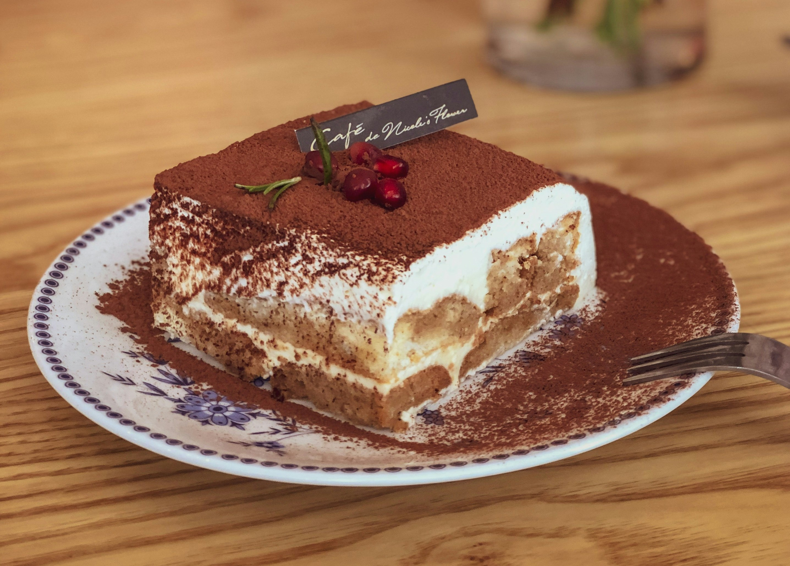

Tiramisu Tres Leches

Description
My husband’s top two desserts of all time are tiramisu and tres leches cake. So, I thought, why not combine them? The result: a fabulous cake that my husband ate almost entirely by himself. I recommend making it a day or two before you need it—this cake gets better as it sits.
Ingredients
Cake
- 3/4 cup unsalted butter, softened
- 3/4 cup firmly packed light brown suga
- 1/2 cup white sugar
- 1 teaspoon salt
- 1/4 teaspoon ground nutmeg
- 6 large eggs, at room temperature
- 1 cup full fat sour cream, at room temperature
- 2 teaspoons vanilla extract
- 1/2 teaspoon almond extract
- 2 cups all-purpose flour
- 1 1/2 teaspoons baking powder
- 1/2 teaspoon baking soda
Espresso-Milk Soak
- 1 cup whole milk
- 1 (14 ounce) can sweetened condensed milk
- 1 (12 ounce) can full fat evaporated milk
- 4 tablespoons instant espresso powder
- 1/4 cup coffee liqueur
Whipped Mascarpone Topping
- 1 1/4 cups heavy cream, chilled
- 1/2 cup confectioner's sugar, or to taste
- 1 teaspoon vanilla extract
- 1 pinch salt
- 8 ounces mascarpone cheese, chilled
- 2 tablespoons cocoa powder, or as needed
Steps
- Preheat the oven to 350 degrees F (180 degrees C). Grease a 9x13-inch baking pan.
- In a large bowl, beat together butter, brown sugar, white sugar, salt, and nutmeg on medium-high speed until light and fluffy, 3 to 5 minutes. Add eggs 1 at a time, beating very well after each addition (batter will look slightly curdled at this point). Add sour cream, vanilla, and almond extract and beat until thoroughly smooth and combined. Add flour, baking powder, and baking soda and mix on low speed until no large clumps of flour remain. Pour batter into the prepared pan and spread into an even layer.
- Bake in the preheated oven until a toothpick inserted into the center of the cake comes out clean, 40 to 45 minutes. Allow cake to cool for about 15 minutes.
- Meanwhile, prepare the espresso-milk soak. Whisk together whole milk, sweetened condensed milk, evaporated milk, espresso powder, and coffee liqueur until completely smooth and combined, and espresso powder has completely dissolved.
- Once cake has cooled for 15 minutes, use a fork to poke several holes in the cake. Gradually and slowly pour espresso-milk mixture over the cake, allowing it to soak in before adding more, until it has all been poured onto the cake. Cover cake with aluminum foil and allow to chill for a minimum of 8 hours to overnight.
- Once cake has thoroughly chilled overnight, make the whipped mascarpone. Place heavy cream, powdered sugar, 1 teaspoon vanilla and pinch of salt in a large mixing bowl. Beat with an electric mixer on medium-high speed until mixture holds soft peaks. Add the chilled mascarpone and continue to whip until mixture holds stiff peaks, about 1 more minute—do not overwhip or the mixture may separate. Place whipped mascarpone on top of the chilled cake and spread into an even layer. Dust the top with cocoa powder.
- Cake can be served immediately after adding the whipped topping, or placed back into the refrigerator until ready to serve. Keep cake stored in the refrigerator.
Home